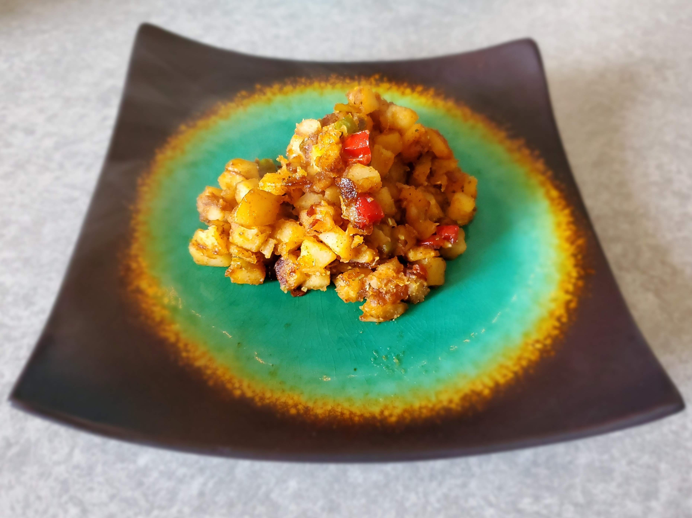

Ingredients:
- 1 c frozen potatoes o’brien (you may choose to cut up your own potatoes, onions, and bell peppers, but it will take a bit longer to cook)
- 1 tbs butter
- 1 tsp minced garlic or ¼ tsp garlic powder
- ¼ tsp chili powder
- ¼ tsp paprika
- ¼ tsp crushed red pepper flakes
- ¼ tsp cinnamon
- 1 tbsp brown sugar
- ¼ tsp parsley and oregano or ¼ tsp italian seasoning
- Salt and pepper to taste
- Optional: ¼ tsp cayenne pepper (if you like it a little spicier)
Instructions:
- Add potatoes, butter, and garlic to a medium size non-stick pan.
- Stir and let cook over medium heat until potatoes are no longer frozen.
- Add chili powder, paprika, red pepper flakes, cinnamon, and optional cayenne pepper and stir until evenly coated over potatoes. You may add your salt and pepper now too if you wish.
- Add brown sugar and let it melt and coat your spiced potatoes.
Note: you may need to add more butter and turn down the heat if it starts to burn.
- Add desired herbs last so they don’t burn and cook to your desired taste. It can be done as soon as your potatoes are soft and cooked through.
- Enjoy!
- Optional: Serve with eggs cooked to your liking for a yummy breakfast.